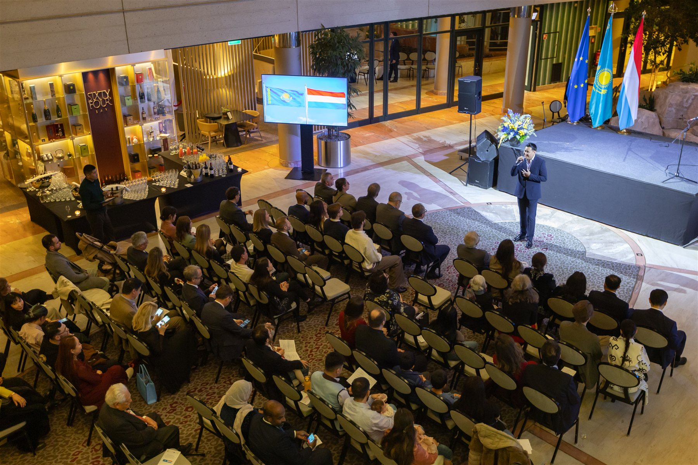
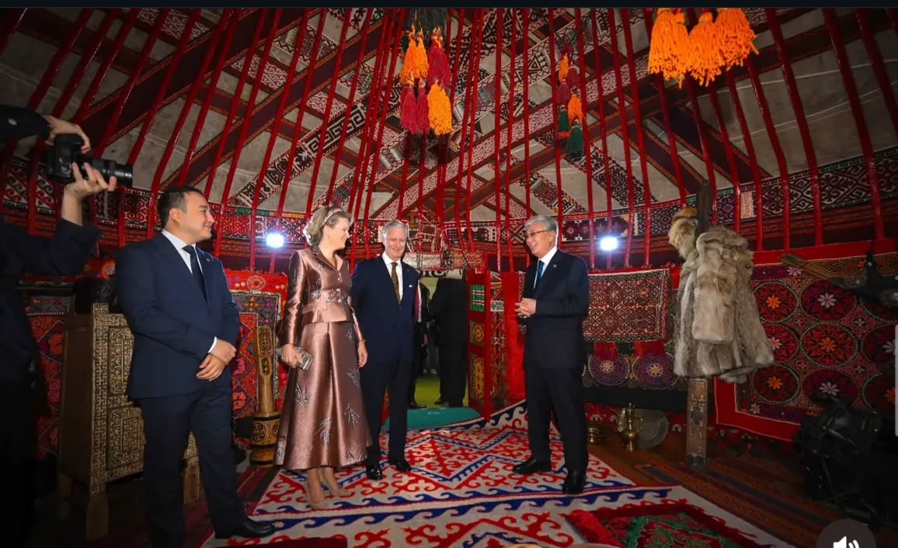

Ideas & exchange
Shanyraq Dialogues
The Dialogues are open discussions on the questions that matter to both sides, from reforms and education to travel and culture.
Discover the Dialogues
About us · Brussels
Shanyraq Dialogues & Shanyraq Fest
Shanyraq Dialogues and Shanyraq Fest bring Kazakhstan and Europe together across Brussels and Luxembourg.
Ideas & exchange
The Dialogues are open discussions on the questions that matter to both sides, from reforms and education to travel and culture.
Discover the Dialogues
Culture & celebration
The Fest invites the public to experience Kazakh heritage through music, traditions, and shared moments.
Explore the Fest
The meaning behind our name
The name comes from the shanyraq, the crown of the yurt, a symbol of home and continuity.
We see our events as a shared home for conversation.